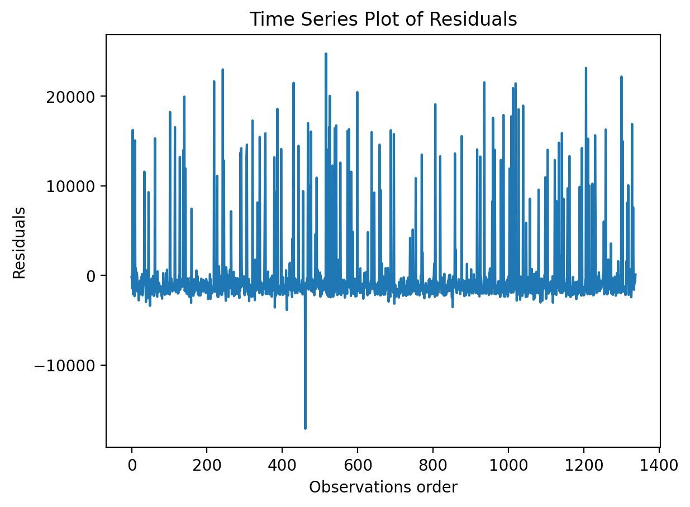
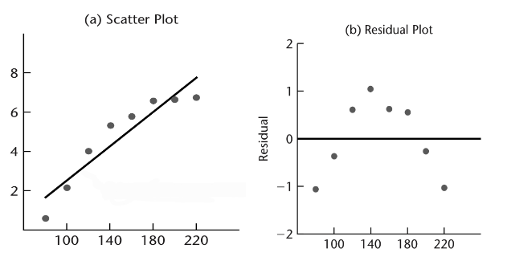
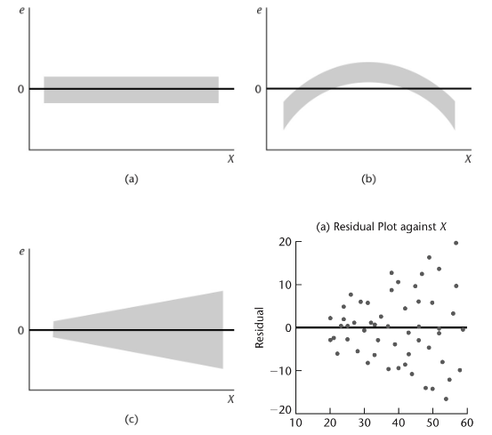
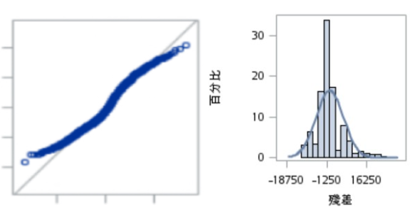

專有名詞解析——殘差診斷頁面
一、獨立性(Independence)診斷
(1)圖片檢視法［看Time Series Plot Of Residual OR Autocorrelation Plot(還不確定用哪個)］

(2)假設檢定法［利用 Durbin-Watson統計量］
Ｈ0：誤差項 ϵ 間相互獨立
Ｈa：誤差項 ϵ 間不相互獨立
Durbin-Watson統計量的取值範圍在0-4之間，當D值接近2時，表示誤差項 ϵ滿足獨立性假設。
［註］若獨立性再加入其他可能遺漏的變數和檢查共線性後仍不滿足，可能需要使用其它軟體配適羅吉斯迴歸或其他分類模型。
二、線性關係(Linearity)診斷
(1)圖片檢視法［看Residual Plot］
若分布對於residual=0非上下均勻分布且對稱，顯示資料可能有非線性趨勢。
(2)假設檢定法［利用 F-test lack of fit］
Ｈ0：Xi和Y間存在線性關係
Ｈa：Xi和Y間存在非線性關係
當p值＞0.05 → 不拒絕虛無假設，因此推定滿足線性關係性假設。
［註］若不滿足請詳見問題解決頁面。
三、同質變異性(Equal Variance)診斷
(1)圖片檢視法［看Residual Plot］
若residual的垂直分布寬度不相當，則可能不滿足同質變異性的假設。
下圖中(a)(b)為符合同質變異性的殘差圖；(c)(d)為不符合同質變異性的殘差圖。
(2)假設檢定法［利用White test］
Ｈ0：Var(ϵ)=σ2
Ｈa：Var(ϵ)≠σ2
當p值＞0.05 → 不拒絕虛無假設，因此推定滿足同質變異性假設。
［註］若不滿足請詳見問題解決頁面。
四、常態性(Normality)診斷
(1)圖片檢視法［看QQ plot, normal probability histogram］
［左圖］若residual偏離直線，顯示資料可能不服從常態分配。
［右圖］可參考直方圖和常態分配曲線的相似性進行辨別。
(2)假設檢定法
Ｈ0：數據服從常態分佈
Ｈa：數據不服從常態分佈
當p值＞0.05 → 不拒絕虛無假設，因此推定滿足常態性假設。
a. Shapiro-Wilk test
適用於小樣本資料（通常n ≤ 50）；基於樣本數據排序和最小平方法來計算統計量，再以理論上的常態分配期望值進行比較。
b. Kolmogorov-Smirnov test
通常適用各種大小的資料，因此具有廣泛適用性；基於累計分布函數的無母數檢定，用以檢定一個經驗分布與另一個理想分布是否不同。
c. Cramer-von Mises test
對於常態性檢驗較敏感，特別對於尾部差異更敏感；基於比較樣本的累積分配函數和常態分佈的累積分配函數差異計算統計量。
d. Anderson-Darling test
不適用於小樣本資料； 基於理想分佈的累積分佈函數的距離測試方法，用於檢驗數據是否來自於某個特定的分配(本研究中檢驗是否來自於常態分配)。
［註］若不滿足請詳見問題解決頁面。